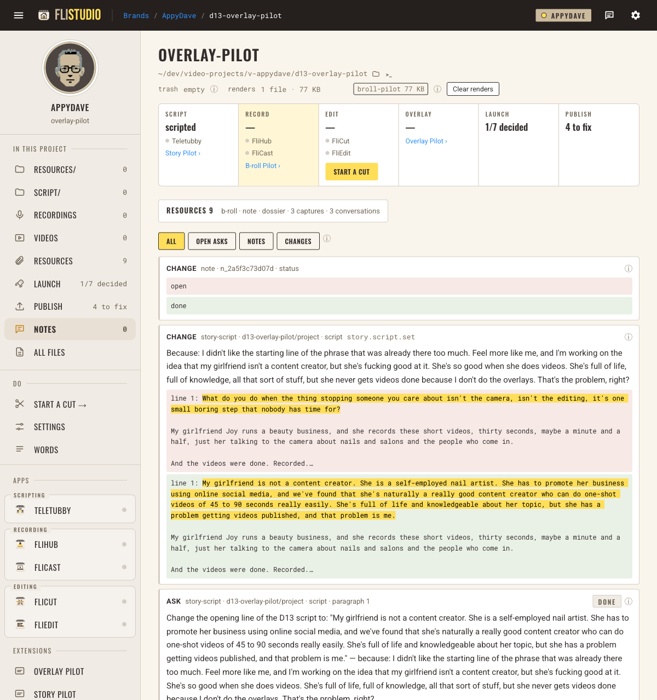
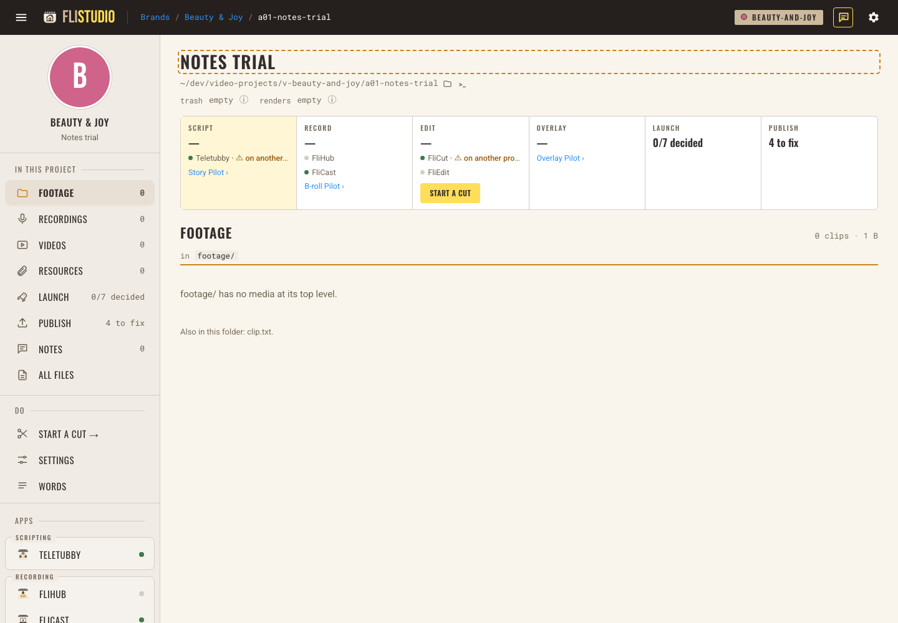
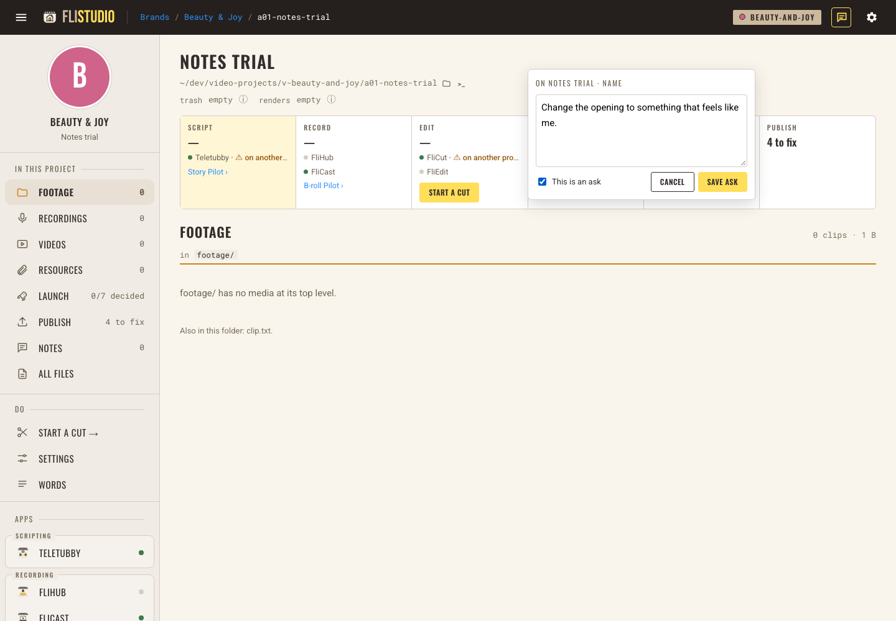
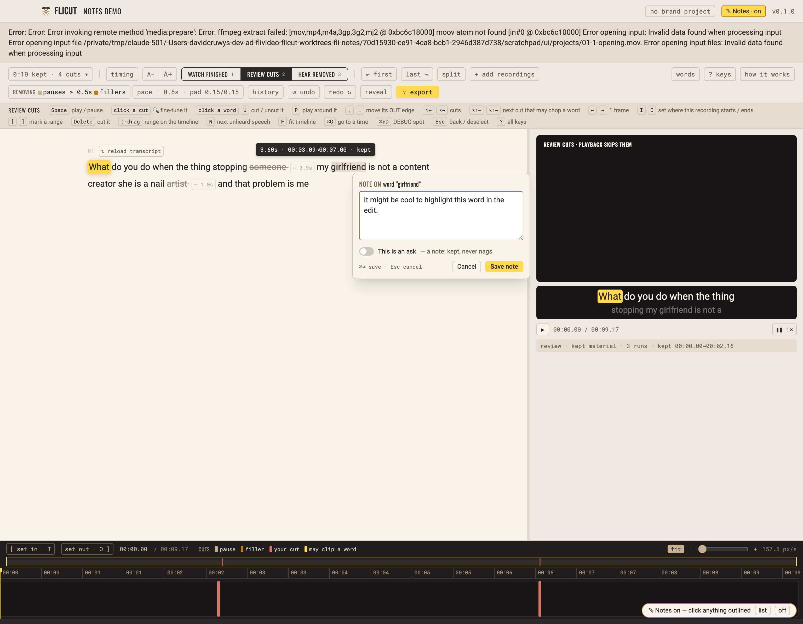
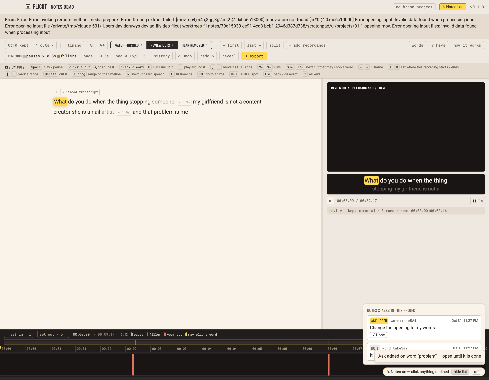

fli-notes: notes, asks & changes
1 · FliStudio live at :7150
- Open D13 → Notes in the left rail. Look for three records: your ask (marked Done), the script change with your "because" words and before/after in red and green, and the open→done line.
- Press ⌥⇧N (or the speech-bubble icon, top right). Things that can take a note get an outline as you hover: the project name, rail rows, files, resources, launch pieces, Story Pilot paragraphs.
- Click a Story Pilot paragraph, type a note, Save. Do it again with This is an ask on. The Notes count in the rail shows open asks only.
- In Notes, press Mark done on that ask. Use the filters: Open asks · Notes · Changes.
- Press ⌥⇧N again. Notes mode is off and clicks work normally.



2 · FliCut start it first
- Start FliCut as usual and open a cut. The header has a ✎ Notes button, off.
- Press ⌥⇧N (⌘⇧N works here too). Hover words, cuts, recordings, the player. Click a word, write a note, Save.
- Do another with the ask switch on. Open list (bottom right) and press ✓ Done.
- Make a cut, then undo. Each one writes a change record into the project's
fli.notes.jsonl. They aren't shown in FliCut's small list, only in FliStudio's Notes view.


3 · D13: what changed
Only line 1 of d13-overlay-pilot/script/storypilot/project/script.md, through story.script.set. I checked that the rest of the script is byte-identical, and title, triggers and chapters were re-sent unchanged. Feel/do settings were untouched, and nothing was sent to TeleTubby or the Prompter.
My girlfriend is not a content creator. She is a self-employed nail artist. … she has a problem getting videos published, and that problem is me.
The records are: the ask (human:chat, your words, Roamy session linked), the change (by agent:flivideo-orch, before/after excerpt, your "because" verbatim) and the resolve (ask open → done, linked to the change). scanNotes over v-appydave returns all three. A backup of the old script is kept.
One honest slip: the change line lacks the answers link to the ask, because my script read the ask's id from the wrong field. The ask → change link exists through the resolve line (follows). The file is append-only, so I didn't rewrite it.
4 · What isn't done
| Gap | Why / next |
|---|---|
| FliStudio: generic writes (launch, publish, words…) log only the input as "after", with no "before" | The detailed before/after is wired for Story Pilot, resources, Overlay beats and Project Status. Each other verb needs one small "watched" entry. |
| FliCut: clicking the real Cut button wasn't screen-tested | It was proven through the same save door the editor uses (save + undo logged live), not by clicking. |
| The two apps differ in small ways (see Q1) | Each built its half in parallel. |
| Pre-existing flaky tests | FliStudio's project-status tooltip e2e (~50%, on the old main too); FliCut's dev-shot test under full-suite load. Neither is from this work. |
Done: the flivideo:flistudio skill now knows the notes commands and when to pass because (appydave-plugins 3f48d69).
5 · Questions: each has a recommendation
saidBy, answers and region.
notes.resolve does.
agent:flicut. An agent relaying your words logs them as human:chat and records itself as the relayer.
Commits: fli-core 00bc4bb (v0.27.0) · FliStudio 1eba790 · FliCut db599d0 · skill 3f48d69. Briefs: flivideo/docs/briefs/fli-notes-suite-record-2026-10-31.md + fli-notes-orch-workplan-2026-10-31.md.